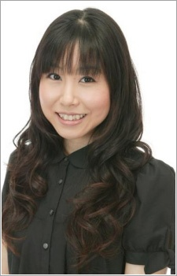

|  |
Ai Maeda is a voice actress currently affiliated with Aoni Production. She is a singer under the name AiM and a songwriter under the name ai. She is best known throughout the English-speaking as an voice actress and singer in the original Japanese verison of Digimon. She is married to Ryotaro Okiayu.
|
| |
Karen Minazuki | Yes! Pretty Cure 5 |